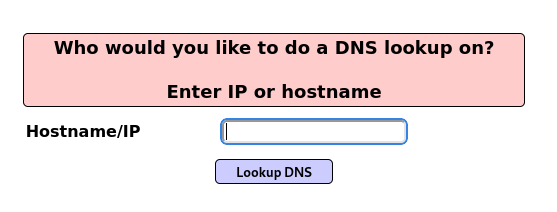
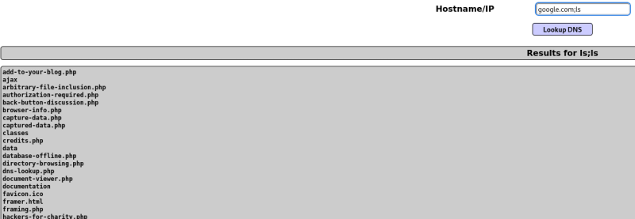

Esta vulnerabilidad se va a basar como muchas de las que hemos visto anteriormente en una inyección de código,pero el contexto de esta inyección va a ser un comando que se va a ejecutar en el sistema operativo del web server.

Cuando tenemos un formulario como este en el que rellenamos, hace una resolución en el web server y nos devuelve respuesta, significa que el servidor lo ejecuta en el sistema operativo del servidor utilizando alguna herramienta como DNSLookUp o similares.
Lo que significa que mandemos en el input se ejecutará como comando en el webserver por lo que podemos concatenar comandos.
